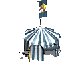
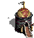
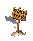
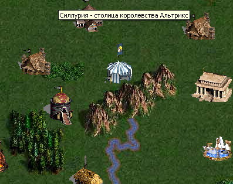
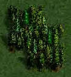
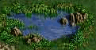
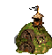
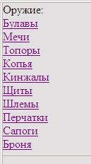
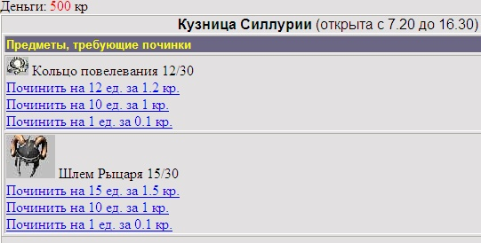

|
Курсы
Регистрация
Методика
Оглавление
Для учащихся

Статьи
Инструменты
Контакты
|
Урок
6.
Создание города
6.1.
Центральная площадь
Мы не не можем ограничить нашего персонажа
только одной комнатой - Ареной, где ему приходилось
находится в течении предыдущих уроков. Посему нам предстоит создать городскую
площадь, которая в игре будет называться центральной площадью.
Так как этот курс создан для программистов, а не для
художников, то мы не станем рисовать как саму площадь, так и размещающиеся на
них объекты, а возьмем, к примеру графику из игры Heroes of Might and
Magic 3 и вставим в наш проект.
Смотрите графические фалы
здесь.
Следующие объекты нам понадобятся в наших
ближайших уроках:

Арена |

Кузница |

Торговые ряды |

Магическая лавка |

Вокзал |

Знак |
Арена - здание, в котором
осуществляются поединки наших персонажей и мы будем использовать картинку этого
объекта. чтоб возвращаться с Центральной Площади обратно на страничку с нашим
героем (char.phtml).
Кузница - объект, в
котором игрок сможет приобретать вооружение и доспехи, а также ремонтировать
изношенные вещи (мы сделаем кузницу в этом уроке).
Торговые ряды - место, где протекают
торговые сделки игроков. Здесь можно сбыть поношенный щит и приобрести оружие
для нового уровня, приобрести магические пузырьки и безвозмездно передать
кому-нибудь доспехи. В уроке 13 мы сделаем этот интересный и полезный для
играющих объект.
Магическая лавка - этот объект позволит
нам приобретать магические снадобья по государственным ценам.
Вокзал - здесь мы сможем приобрести билеты
на кареты, которые курсируют между разными городами.
Знак - этот объект имеет
только одну смысловую нагрузку - позволяет нам переходить в другую часть
центральной площади (ЦП).
После того, как мы разместили объекты
на ЦП, она стала выглядеть примерно так:

Описание ЦП мы осуществим в файлах map.phtml
и map2.phtml. Пока что остановимся только
на первом из них, так как в ближайшие уроки будет работать только с ним. Вот как
отображаются игровые объекты на Центральной площади при помощи языка
HTML.
<CENTER>
<div style="position:relative;"><IMG SRC=Items/Towns/Silluria/map1.jpg
ALT="Силлурия - столица королевства Альтрикс"
width="769" height="541">
<div style="position:absolute; left:10px; top:10px;width:149px;
height:136px; z-index:12;z-index:12"><IMG SRC=Items/Towns/Silluria/silluria.gif
CLASS=aFilter onmouseover="imover(this)" onmouseout="imout(this)" ALT="Вы
находитесь в столице Королевства Альтрикс"></div>
<div style="position:absolute; left:-49px; top:170px;width:149px;
height:136px; z-index:12;z-index:12"><IMG SRC=Items/Towns/Silluria/sign.gif
CLASS=aFilter onmouseover="imover(this)" onmouseout="imout(this)" ALT="В
западную часть города"></div>
<div style="position:absolute;left:160px;top:150px;width:149px;
height:136px; z-index:12;z-index:12"><IMG SRC=Items/Towns/Silluria/church.gif
CLASS=aFilter onmouseover="imover(this)" onmouseout="imout(this)" ALT="Магическая
лавка" width="58" height="61" ></div>
<div style="position:absolute;left:420px;top:160px;width:149px;
height:136px; z-index:12;z-index:12"><IMG SRC=Items/Towns/Silluria/arena.gif
CLASS=aFilter onmouseover="imover(this)" onmouseout="imout(this)"
onclick="gotoArena()" ALT="Арена"
width="70" height="70"></div>
<div style="position:absolute;left:320px;top:230px;width:149px;
height:136px; z-index:12;z-index:12"><IMG SRC=Items/Towns/Silluria/smith.gif
CLASS=aFilter onmouseover="imover(this)" onmouseout="imout(this)" ALT="Кузница"
width="70" height="70"></div>
<div style="position:absolute;left:120px;top:230px;width:149px;
height:136px; z-index:12;z-index:12"><IMG SRC=Items/Towns/Silluria/market.gif
CLASS=aFilter onmouseover="imover(this)" onmouseout="imout(this)" ALT="Торговые
ряды" width="70" height="70"></div>
<div style="position:absolute;left:210px;top:310px;width:149px;
height:136px; z-index:12;z-index:12"><IMG SRC=Items/Towns/Silluria/fireguild.gif
CLASS=aFilter onmouseover="imover(this)" onmouseout="imout(this)" ALT="Гильдия
огня" width="70" height="70"></div>
<div style="position:absolute;left:590px;top:290px;width:149px;
height:136px; z-index:12;z-index:12"><IMG SRC=Items/Towns/Silluria/waterguild.gif
CLASS=aFilter onmouseover="imover(this)" onmouseout="imout(this)" ALT="Гильдия
воды" width="70" height="70"></div>
<div style="position:absolute;left:590px;top:190px;width:149px;
height:136px; z-index:12;z-index:12"><IMG SRC=Items/Towns/Silluria/bank.gif
CLASS=aFilter onmouseover="imover(this)" onmouseout="imout(this)" ALT="Вокзал"
width="70" height="70"></div>
<div style="position:absolute;left:370px;top:350px;width:149px;
height:136px; z-index:12;z-index:12"><IMG SRC=Items/Towns/Silluria/mercenary.gif
CLASS=aFilter onmouseover="imover(this)" onmouseout="imout(this)" ALT="Торговец"
width="70" height="70"></div>
<div style="position:absolute;left:370px;top:70px;width:149px;
height:136px; z-index:12;z-index:12"><IMG SRC=Items/Towns/Silluria/armor.gif
CLASS=aFilter onmouseover="imover(this)" onmouseout="imout(this)" ALT="Оружейник"
width="70" height="70"></div>
<div style="position:absolute;left:570px;top:90px;width:149px;
height:136px; z-index:12;z-index:12"><IMG SRC=Items/Towns/Silluria/house.gif
CLASS=aFilter onmouseover="imover(this)" onmouseout="imout(this)" ALT="Эксперт
топора" width="70" height="70"></div>
<div style="position:absolute;left:490px;top:390px;width:149px;
height:136px; z-index:12;z-index:12"><IMG SRC=Items/Towns/Silluria/house.gif
CLASS=aFilter onmouseover="imover(this)" onmouseout="imout(this)" ALT="Магистр
булавы" width="70" height="70"></div>
<div style="position:absolute;left:140px;top:400px;width:149px;
height:136px; z-index:12;z-index:12"><IMG SRC=Items/Towns/Silluria/house.gif
CLASS=aFilter onmouseover="imover(this)" onmouseout="imout(this)" ALT="Эксперт
кожи" width="70" height="70"></div>
<div style="position:absolute;left:70px;top:50px;width:149px;
height:136px; z-index:12;z-index:12"><IMG SRC=Items/Towns/Silluria/house.gif
CLASS=aFilter onmouseover="imover(this)" onmouseout="imout(this)" ALT="Мастер
огня" width="70" height="70"></div>
<div style="position:absolute;left:-20px;top:246px;width:149px;
height:136px; z-index:12;z-index:12"><IMG SRC=Items/Towns/Silluria/house.gif
CLASS=aFilter onmouseover="imover(this)" onmouseout="imout(this)" ALT="Магистр
воды" width="70" height="70"></div>
<div style="position:absolute;left:290px;top:150px;width:149px;
height:136px; z-index:12;z-index:12"><IMG SRC=Items/Towns/Silluria/house.gif
CLASS=aFilter onmouseover="imover(this)" onmouseout="imout(this)" ALT="Эксперт
земли" width="70" height="70"></div>
<div style="position:absolute;left:300px;top:430px;width:149px;
height:136px; z-index:12;z-index:12"><IMG SRC=Items/Towns/Silluria/house.gif
CLASS=aFilter onmouseover="imover(this)" onmouseout="imout(this)" ALT="Магистр
разума" width="70" height="70"></div>
</CENTER> |
Как вы заметили, мы создаем каждый игровой
объект в виде слоя (<div>) в
котором указываем его абсолютные координаты: ( к примеру для вокзала:
left:590px;top:190px;)
Событие (onmouseout="imout(this)")
позволяет подсвечивать объекты, которые находятся под курсором мыши.
Функции, ответственные за подсветку и ее отключение на JavaScript
выглядят так:
function imover(im){
im.filters.Glow.Enabled=true;
}
function imout(im){
im.filters.Glow.Enabled=false;
} |
где im -
объект над которым находится курсор мыши для
imover
(или с которого убирается курсор мыши для функции -
imout)
Файл map.phtml Вы найдете здесь
6.2.
Другие локации:
лес, озеро, шахта.
Нажав на знак - мы можем перейти в западную часть центральной
площади. Пока там расположены только декоративные элементы:

Лес |

Озеро |

Вход в шахту |
Описываются эти объекты так:
<CENTER>
<div style="position:absolute; left:649px; top:170px;width:149px;
height:136px; z-index:12;z-index:12"><IMG SRC=Items/Towns/Silluria/sign.gif
CLASS=aFilter onmouseover="imover(this)" onmouseout="imout(this)"
onclick="gotoWest()" ALT="В восточную часть города"></div>
<div style="position:absolute;left:160px;top:150px;width:149px;
height:136px; z-index:12;z-index:12"><IMG SRC=Items/Towns/Silluria/lake.gif
CLASS=aFilter onmouseover="imover(this)" onmouseout="imout(this)" ALT="Озеро"
width="58" height="61" ></div>
<div style="position:absolute;left:420px;top:160px;width:149px;
height:136px; z-index:12;z-index:12"><IMG SRC=Items/Towns/Silluria/forest.gif
CLASS=aFilter onmouseover="imover(this)" onmouseout="imout(this)" ALT="Лес"
width="70" height="70"></div>
<div style="position:absolute;left:320px;top:90px;width:149px;
height:136px; z-index:12;z-index:12"><IMG SRC=Items/Towns/Silluria/mine.gif
CLASS=aFilter onmouseover="imover(this)" onmouseout="imout(this)" ALT="Шахта"
width="70" height="70"></div>
</CENTER> |
Не будем также забывать про "Знак",
который вернет нас в восточную часть Центральной площади по событию (onclick="gotoEast())
Функция, ответственная за переход на
JavaScript:
function gotoEast()
{
location.href='map.phtml?NickName=<?php echo "$aNickName"; ?>';
} |
Файл map.phtml Вы найдете
здесь
6.3.
Таблица магазина оружия
Как Вы уже догадались, оружие и доспехи
будет продаваться в кузне. Причем, цены на предметы будут фиксированными, так
что, по сути - кузница, является не чем иным как государственным магазином
амуниции и оружия.
Так как цены на типы и подвиды предметов у нас
одинаковые, значит мы можем создать таблицу для реализации эти предметов игрокам
в таком виде:
/*таблица предметов для продажи у КУЗНЕЦА (ОРУЖЕЙНИКА)*/
CREATE TABLE `smith`(
`SM_ID` BIGINT(20) unsigned NOT NULL auto_increment,
/*уник. идентификатор предмета в магазине*/
`IL_ID` INT(4) unsigned NOT NULL, /* ID предмета в
справочнике предметов*/
`Town` INT(2) unsigned NOT NULL, /*Город, где
расположено здание*/
`QTY` INT NOT NULL, /*количество предметов*/
PRIMARY KEY (`SM_ID`),
KEY (`Town`)
) TYPE=MyISAM; |
Связь со справочником предметов Items_List
осуществляется посредством общего для таблиц поля
IL_ID.
Поле QTY
отвечает за количество предметов одного типа, которые
содержаться на полках нашей кузницы.
Давайте добавим несколько видов оружия и амуниции, чтоб полки
нашего государственного магазина не пустовали:
INSERT INTO smith
(Town,IL_ID,QTY) VALUES(1,2,100);
INSERT INTO smith (Town,IL_ID,QTY) VALUES(1,5,50);
INSERT INTO smith (Town,IL_ID,QTY) VALUES(1,8,300);
INSERT INTO smith (Town,IL_ID,QTY) VALUES(1,13,300); |
Итак теперь у нас в кузнице продаются товары
с IL_ID
( 2, 5, 8 и 13 ), а это говорит о том, что на полках содержаться
следующие товары: Щит Пророчества, Перчатки кузнеца, Болотные Сапоги и
Рубашка воина в соответствующих количествах, указанных в поле
QTY.
Смотрите наш sql-скрипт
здесь.
При покупке в магазине какого-либо предмета, количество на
полке должно уменьшаться и этот предмет должен создаваться в рюкзаке покупателя.
6.4.
Создание
магазина продажи оружия
Сейчас перед нами стоит задача отображения предметов на
полках нашего магазина (кузницы). Для этих целей давайте создадим файл
smith.phtml (smith - англ. кузня)
Кроме того нам понадобится внести небольшие
изменения в наш файл
map.phtml, чтоб при нажатии на картинку с кузницей
мы попадали в наш магазин. Сделаем это следующим образом - пропишем для этой
картинки событие
onClick.
| <div
style="position:absolute;left:320px;top:230px;width:149px; height:136px;
z-index:12;z-index:12"><IMG SRC=Items/Towns/Silluria/smith.gif CLASS=aFilter
onmouseover="imover(this)" onmouseout="imout(this)"
onclick="gotoSmith()"
ALT="Кузница" width="70" height="70"></div> |
А сама функция, которая перенесет нас в кузницу на
JavaScript выглядит, думается уже очень знакомо:
function gotoSmith()
{
location.href='smith.phtml?itemtype=1&mode=1&NickName=<?php
echo "$aNickName"; ?>';
} |
единственное - мы еще передаем аргументы:
itemtype
и
mode,
чтобы инициализировать стартовые параметры - полку с какими предметами
показывать при входе в магазин и какой режим работы кузницы выбрать - режим
продажи предметов или режим починки.
Давайте отобразим меню продающихся предметов в магазине. Это
легко сделать следующим кодом на
PHP:
<?php
print( '<td width="138" height="115" rowspan="2" valign="top">' );
print( 'Оружие:<br>' );
print( '<a href=smith.phtml?NickName='.$aNickName.'&mode=1&itemtype=1>Булавы</a><br>'
);
print( '<a href=smith.phtml?NickName='.$aNickName.'&mode=1&itemtype=11>Мечи</a><br>'
);
print( '<a href=smith.phtml?NickName='.$aNickName.'&mode=1&itemtype=12>Топоры</a><br>'
);
print( '<a href=smith.phtml?NickName='.$aNickName.'&mode=1&itemtype=13>Копья</a><br>'
);
print( '<a href=smith.phtml?NickName='.$aNickName.'&mode=1&itemtype=14>Кинжалы</a><br>'
);
print( '<a href=smith.phtml?NickName='.$aNickName.'&mode=1&itemtype=2>Щиты</a><br>'
);
print( '<a href=smith.phtml?NickName='.$aNickName.'&mode=1&itemtype=3>Шлемы</a><br>'
);
print( '<a href=smith.phtml?NickName='.$aNickName.'&mode=1&itemtype=4>Перчатки</a><br>'
);
print( '<a href=smith.phtml?NickName='.$aNickName.'&mode=1&itemtype=7>Сапоги</a><br>'
);
print( '<a href=smith.phtml?NickName='.$aNickName.'&mode=1&itemtype=10>Броня</a><br>'
);
print('<HR>');
print( '</td>' );
?> |
В браузере это будет выглядеть так:

Теперь отобразим товары, выбранной из меню полки с товарами. На
PHP это будет выглядеть следующим образом:
<table border="1" width="80%">
// Отобразим содержимое магазина у кузнеца (оружейника)
$query = "SELECT il.IL_ID, il.ItemName,
il.ItemType, il.ItemNo, il.Item_Image, il.Item_StateCost, s.QTY FROM
smith s inner join Items_List il on s.IL_ID=il.IL_ID WHERE il.ItemType='$aItemType'";
$result = mysql_query($query) or
die("Query failed : " .
mysql_error());
while ($aRow =
mysql_fetch_array($result)) {
$aItem = $aRow["IL_ID"];
$aItemType = $aRow["ItemType"];
$aItemNo = $aRow["ItemNo"];
$aItemQty = $aRow["QTY"];
$aItemImage = $aRow["Item_Image"];
$aStateCost = $aRow["Item_StateCost"];
$aItemName = $aRow["ItemName"];
print('<tr>');
print('<td width="10%" valign="top"><img
src=Items/'.$aItemImage);
print("><br><a href=smith.phtml?NickName=$aNickName&itemtype=$aItemType&item=$aItem>купить</a></td>");
print('<td width="90%" valign="top" bgcolor=eae0e0>'.$aItemName.'<br>Стоимость:
'.$aStateCost.' (количество:'.$aItemQty.')</td>');
print('</tr>');
</table> |
В запросе SELECT языка
SQL мы делаем выборку из двух таблиц, основная из которых
- smith, а связанная с ней items_list.
Основные данные которые нам нужно показать покупателю, это
картинка предмета, название, стоимость и количество (первые два берутся из
таблицы items_list). Вы можете также, в качестве
тренировки, вывести и дополнительные параметры, например, урон для оружия.
Под картинкой предмета у нас также выводится ссылка для покупки.
В параметре
&item
мы передаем IL_ID
этого предмета из справочника, что означает, что мы должны создать такой предмет
в рюкзаке купившего его игрока.
Это можно реализовать следующим образом. Сперва проверим, передан
ли параметр &item.
// Раз передан этот параметр, значит режим покупки
$iBuy = false;
if (!empty($_GET['item']))
{
$aItem = $_GET['item'];
$iBuy = true;
} |
Затем
проведем непосредственно покупку предмета:
if ($iBuy){ // Была
инициирована покупка
// Сколько вещей этого типа?
$query = "SELECT
s.SM_ID,s.QTY,il.Item_StateCost,il.ItemName,il.ItemType,il.ItemNo FROM
smith s inner join Items_List il on s.IL_ID=il.IL_ID WHERE il.IL_ID = '$aItem'";
$result = mysql_query($query) or
die("Query failed : " .
mysql_error());
$aRow = mysql_fetch_array( $result);
$aSMID = $aRow["SM_ID"];
$aQTY = $aRow["QTY"];
$aStateCost = $aRow["Item_StateCost"];
$aItemName = $aRow["ItemName"];
if ($aQTY-- > -1){ // есть ли вообще эти
вещи?
$lNoMoney=false;
if ($aMoney >= $aStateCost){
// хватит ли денег купить вещь?
$aMoney = $aMoney - $aStateCost;
// Засунем в рюкзак купленную вещь!
$query = "INSERT INTO
items(IL_ID,Item_Owner,Item_Position,Item_CurrentLife)";
$query .= "Values ('$aItem','$aUserID','2','0')";
$result = mysql_query($query,$link) or
die("Query failed : " .
mysql_error());
// Уменьшим деньги
$query = "UPDATE users SET Character_Money='$aMoney'
WHERE Nick_Name='$aNickName'";
$result = mysql_query($query) or
die("Query failed : " .
mysql_error());
// Уменьшим кол-во предметов в магазине
$query = "UPDATE smith SET QTY='$aQTY' WHERE SM_ID='$aSMID'";
$result = mysql_query($query) or
die("Query failed : " .
mysql_error());
}else
{
$lNoMoney=true;
}
}
} |
В первом запросе мы определим государственную
стоимость покупаемого предмета в кузнице. Затем проверим, хватит ли нам средств
для покупки этого предмета, путем сравнения его стоимости с количеством денег у
нашего персонажа (
$aStateCost
и
$aMoney).
Далее, мы создаем купленный предмет в рюкзаке игрока и
вычитаем из имеющейся наличности персонажа стоимость купленного предмета.
И последнее - уменьшаем количество предметов этого типа
на полке магазина.
Полный текст файла
smith.phtml Вы найдете
здесь.
6.5.
Создание ремонтной мастерской.
В процессе поединков амуниция и оружие
имеет склонность изнашиваться и их периодически нужно ремонтировать. За эти
услуги кузницы (а вернее ее подразделения - ремонтной мастерской) конечно же
нужно платить.
Давайте договоримся, что починка
изношенного предмета на 1 единицу будет стоит 0.1 кредитки. То есть если у нас
есть меч с износом 11/30 и мы чиним его на 1 единицу до 10/30, то стоимость
такого ремонта будет составит 0.1 кредитки. Соответственно, если мы чиним этот
меч на 10 единиц, с 11/30 до 1/30, то заплатим одну кредитку полностью.
Для удобства игрока мы реализуем обе
возможности - починку на единицу и 10 единиц износа. Само собой разумеется, если
износ предмета составляет 8/30 - то мы не будем предлагать возможность чинить
такой предмет на 10 пунктов.
Ну и последнее - будем предлагать
починить предмет полностью .
По умолчанию вход в магазин
осуществляется в режиме покупки предметов, поэтому мы должны сделать еще одно
меню, которое позволит нам переключаться также и в режим починки. Это
переключение можно сделать следующим образом:
|
<a href="smith.phtml?mode=2&NickName=<?
echo $aNickName ?>">Починить
</a><br> |
Как Вы заметили, мы передаем
параметр
mode=2
в нашу программу хранящуюся в файле smith.phtml
для входа в режим 2 (починки предметов)
В начале, мы с Вами конечно проверим этот режим:
if (!empty($_GET['mode']))
{
$aMode = $_GET['mode'];
} |
И если этот режим равен 2, выполним следующий
PHP код:
if ($aMode==2){
print('<tr><td width="700" bgcolor="#6B6683"
height="16"><b><font face="Arial" color="#FFFF00" size="2">
Предметы, требующие починки</font></b></td></tr>');
// Отобразим содержимое нашего рюкзака (те предметы, у которых есть
износ)
$query = "SELECT i.IT_ID, i.Item_Position, i.Item_CurrentLife,
il.Item_FullLife, il.ItemType, il.ItemNo, il.Item_Image, il.ItemName
FROM Items i inner join Items_List il on il.il_id=i.il_id WHERE
Item_Owner='$aUserID' and Item_Position='2'";
$result = mysql_query($query) or
die("Query failed : " .
mysql_error());
while ($aRow = mysql_fetch_array($result))
{
$aSlotItemID = $aRow["IT_ID"];
$aItemType = $aRow["ItemType"];
$aItemNo = $aRow["ItemNo"];
$aItemImage = $aRow["Item_Image"];
$aItemName = $aRow["ItemName"];
$aItemCurLife = $aRow["Item_CurrentLife"];
$aItemFullLife = $aRow["Item_FullLife"];
if ($aItemCurLife <> 0){
echo "<tr><td>" . "<img border=0 src=Items/".$aItemImage."
ALT='Предмет ".$aItemName."'> $aItemName $aItemCurLife/$aItemFullLife ";
echo "<br><a href='smith.phtml?mode=2&repair=$aItemCurLife&repitem=$aSlotItemID&NickName=".$aNickName."'> Починить
на $aItemCurLife ед. за ".($aItemCurLife/10)." кр.</a>";
if ($aItemCurLife>=10){
echo "<br><a href='smith.phtml?mode=2&repair=10&repitem=$aSlotItemID&NickName=".$aNickName."'>Починить
на 10 ед. за 1 кр.</a>";
}
echo "<br><a href='smith.phtml?mode=2&repair=1&repitem=$aSlotItemID&NickName=".$aNickName."'>Починить
на 1 ед. за 0.1 кр.</a>";
echo "</td></tr>";
}
}
} |
Как видно из запроса
SELECT, мы показываем
содержимое рюкзака (Item_Position='2'),
но потом отбираем предметы по условию (
$aItemCurLife <> 0
), чтоб не показывать предметы с нулевым износом. Используя
соответствующие условия, мы выводим ссылки для починки предмета целиком,
либо на 10 единиц, либо на 1 единицу износа.
Выглядит это следующим образом:

При нажатии на соответствующую ссылку, мы инициируем починку предмета, передавая
нашему PHP - сценарию параметры
&repair
и
&repitem.
В теле файла smith.phtml они
принимаются уже знакомым Вам образом:
if (!empty($_GET['repair']))
{
$aRepairUnits = $_GET['repair'];
}
if (!empty($_GET['repitem']))
{
$aRepItem = $_GET['repitem'];
} |
Теперь остается починить предмет на соответствующее количество
единиц износа и вычесть из содержащейся у персонажа суммы наличных стоимость
этой услуги ремонтной мастерской.
if (($aRepairUnits <> 0) && ($aRepItem <>
0)){ // Была инициирована починка
if ($aMoney >= ($aRepairUnits/10)){
// Починима предмет
$query = "UPDATE Items SET Item_CurrentLife=Item_CurrentLife-$aRepairUnits
WHERE IT_ID='$aRepItem'";
$result = mysql_query($query) or
die("Query failed : " .
mysql_error());
// Уменьшим деньги
$aMoney = $aMoney - ($aRepairUnits/10);
$query = "UPDATE users SET Character_Money='$aMoney'
WHERE Nick_Name='$aNickName'";
$result = mysql_query($query) or
die("Query failed : " .
mysql_error());
}
else{
$lNoMoney=true;
}
} |
Полный текст
измененного в пункте 6.5. файла
smith.phtml Вы найдете здесь.
В следующем уроке мы вплотную приблизимся к проведению поединков. Мы
научимся подавать, принимать и отзывать заявки на бой.
|
|